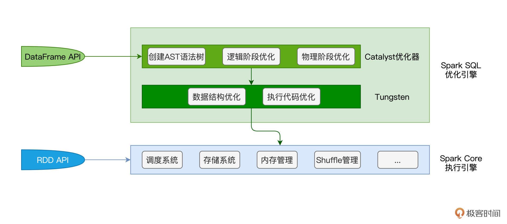

- 00 开篇词 入门Spark，你需要学会“三步走”.md.html
- 01 Spark：从“大数据的Hello World”开始.md.html
- 02 RDD与编程模型：延迟计算是怎么回事？.md.html
- 03 RDD常用算子（一）：RDD内部的数据转换.md.html
- 04 进程模型与分布式部署：分布式计算是怎么回事？.md.html
- 05 调度系统：如何把握分布式计算的精髓？.md.html
- 06 Shuffle管理：为什么Shuffle是性能瓶颈？.md.html
- 07 RDD常用算子（二）：Spark如何实现数据聚合？.md.html
- 08 内存管理：Spark如何使用内存？.md.html
- 09 RDD常用算子（三）：数据的准备、重分布与持久化.md.html
- 10 广播变量 & 累加器：共享变量是用来做什么的？.md.html
- 11 存储系统：数据到底都存哪儿了？.md.html
- 12 基础配置详解：哪些参数会影响应用程序稳定性？.md.html
- 13 Spark SQL：让我们从“小汽车摇号分析”开始.md.html
- 14 台前幕后：DataFrame与Spark SQL的由来.md.html
- 15 数据源与数据格式：DataFrame从何而来？.md.html
- 16 数据转换：如何在DataFrame之上做数据处理？.md.html
- 17 数据关联：不同的关联形式与实现机制该怎么选？.md.html
- 18 数据关联优化：都有哪些Join策略，开发者该如何取舍？.md.html
- 19 配置项详解：哪些参数会影响应用程序执行性能？.md.html
- 20 Hive + Spark强强联合：分布式数仓的不二之选.md.html
- 21 Spark UI（上）：如何高效地定位性能问题？.md.html
- 22 Spark UI（下）：如何高效地定位性能问题？.md.html
- 23 Spark MLlib：从“房价预测”开始.md.html
- 24 特征工程（上）：有哪些常用的特征处理函数？.md.html
- 25 特征工程（下）：有哪些常用的特征处理函数？.md.html
- 26 模型训练（上）：决策树系列算法详解.md.html
- 27 模型训练（中）：回归、分类和聚类算法详解.md.html
- 28 模型训练（下）：协同过滤与频繁项集算法详解.md.html
- 29 Spark MLlib Pipeline：高效开发机器学习应用.md.html
- 30 Structured Streaming：从“流动的Word Count”开始.md.html
- 31 新一代流处理框架：Batch mode和Continuous mode哪家强？.md.html
- 32 Window操作&Watermark：流处理引擎提供了哪些优秀机制？.md.html
- 33 流计算中的数据关联：流与流、流与批.md.html
- 34 Spark + Kafka：流计算中的“万金油”.md.html
- 用户故事 小王：保持空杯心态，不做井底之蛙.md.html
- 结束语 进入时间裂缝，持续学习.md.html
- 捐赠
20 Hive + Spark强强联合：分布式数仓的不二之选
你好，我是吴磊。
在数据源与数据格式，以及数据转换那两讲（第15、16讲），我们介绍了在Spark SQL之上做数据分析应用开发的一般步骤。
这里我们简单回顾一下：首先，我们通过SparkSession read API从分布式文件系统创建DataFrame。然后，通过创建临时表并使用SQL语句，或是直接使用DataFrame API，来进行各式各样的数据转换、过滤、聚合等操作。最后，我们再用SparkSession的write API把计算结果写回分布式文件系统。
实际上，直接与文件系统交互，仅仅是Spark SQL数据应用的常见场景之一。Spark SQL另一类非常典型的场景是与Hive做集成、构建分布式数据仓库。我们知道，数据仓库指的是一类带有主题、聚合层次较高的数据集合，它的承载形式，往往是一系列Schema经过精心设计的数据表。在数据分析这类场景中，数据仓库的应用非常普遍。
在Hive与Spark这对“万金油”组合中，Hive擅长元数据管理，而Spark的专长是高效的分布式计算，二者的结合可谓是“强强联合”。今天这一讲，我们就来聊一聊Spark与Hive集成的两类方式，一类是从Spark的视角出发，我们称之为Spark with Hive；而另一类，则是从Hive的视角出发，业界的通俗说法是：Hive on Spark。
Hive架构与基本原理
磨刀不误砍柴工，在讲解这两类集成方式之前，我们不妨先花点时间，来了解一下Hive的架构和工作原理，避免不熟悉Hive的同学听得云里雾里。
Hive是Apache Hadoop社区用于构建数据仓库的核心组件，它负责提供种类丰富的用户接口，接收用户提交的SQL查询语句。这些查询语句经过Hive的解析与优化之后，往往会被转化为分布式任务，并交付Hadoop MapReduce付诸执行。
Hive是名副其实的“集大成者”，它的核心部件，其实主要是User Interface（1）和Driver（3）。而不论是元数据库（4）、存储系统（5），还是计算引擎（6），Hive都以“外包”、“可插拔”的方式交给第三方独立组件，所谓“把专业的事交给专业的人去做”，如下图所示。
Hive的User Interface为开发者提供SQL接入服务，具体的接入途径有Hive Server 2（2）、CLI和Web Interface（Web界面入口）。其中，CLI与Web Interface直接在本地接收SQL查询语句，而Hive Server 2则通过提供JDBC/ODBC客户端连接，允许开发者从远程提交SQL查询请求。显然，Hive Server 2的接入方式更为灵活，应用也更为广泛。
我们以响应一个SQL查询为例，看一看Hive是怎样工作的。接收到SQL查询之后，Hive的Driver首先使用其Parser组件，将查询语句转化为AST（Abstract Syntax Tree，查询语法树）。
紧接着，Planner组件根据AST生成执行计划，而Optimizer则进一步优化执行计划。要完成这一系列的动作，Hive必须要能拿到相关数据表的元信息才行，比如表名、列名、字段类型、数据文件存储路径、文件格式，等等。而这些重要的元信息，通通存储在一个叫作“Hive Metastore”（4）的数据库中。
本质上，Hive Metastore其实就是一个普通的关系型数据库（RDBMS），它可以是免费的MySQL、Derby，也可以是商业性质的Oracle、IBM DB2。实际上，除了用于辅助SQL语法解析、执行计划的生成与优化，Metastore的重要作用之一，是帮助底层计算引擎高效地定位并访问分布式文件系统中的数据源。
这里的分布式文件系统，可以是Hadoop生态的HDFS，也可以是云原生的Amazon S3。而在执行方面，Hive目前支持3类计算引擎，分别是Hadoop MapReduce、Tez和Spark。
当Hive采用Spark作为底层的计算引擎时，我们就把这种集成方式称作“Hive on Spark”。相反，当Spark仅仅是把Hive当成是一种元信息的管理工具时，我们把Spark与Hive的这种集成方式，叫作“Spark with Hive”。
你可能会觉得很困惑：“这两种说法听上去差不多嘛，两种集成方式，到底有什么本质的不同呢？”接下来，我们就按照“先易后难”的顺序，先来说说“Spark with Hive”这种集成方式，然后再去介绍“Hive on Spark”。
Spark with Hive
在开始正式学习Spark with Hive之前，我们先来说说这类集成方式的核心思想。前面我们刚刚说过，Hive Metastore利用RDBMS来存储数据表的元信息，如表名、表类型、表数据的Schema、表（分区）数据的存储路径、以及存储格式，等等。形象点说，Metastore就像是“户口簿”，它记录着分布式文件系统中每一份数据集的“底细”。
Spark SQL通过访问Hive Metastore这本“户口簿”，即可扩充数据访问来源。而这，就是Spark with Hive集成方式的核心思想。直白点说，在这种集成模式下，Spark是主体，Hive Metastore不过是Spark用来扩充数据来源的辅助工具。厘清Spark与Hive的关系，有助于我们后面区分Hive on Spark与Spark with Hive之间的差异。
作为开发者，我们可以通过3种途径来实现Spark with Hive的集成方式，它们分别是：
- 创建SparkSession，访问本地或远程的Hive Metastore；
- 通过Spark内置的spark-sql CLI，访问本地Hive Metastore；
- 通过Beeline客户端，访问Spark Thrift Server。
SparkSession + Hive Metastore
为了更好地理解Hive与Spark的关系，我们先从第一种途径，也就是通过SparkSession访问Hive Metastore说起。首先，我们使用如下命令来启动Hive Metastore。
hive --service metastore
Hive Metastore启动之后，我们需要让Spark知道Metastore的访问地址，也就是告诉他数据源的“户口簿”藏在什么地方。
要传递这个消息，我们有两种办法。一种是在创建SparkSession的时候，通过config函数来明确指定hive.metastore.uris参数。另一种方法是让Spark读取Hive的配置文件hive-site.xml，该文件记录着与Hive相关的各种配置项，其中就包括hive.metastore.uris这一项。把hive-site.xml拷贝到Spark安装目录下的conf子目录，Spark即可自行读取其中的配置内容。
接下来，我们通过一个小例子，来演示第一种用法。假设Hive中有一张名为“salaries”的薪资表，每条数据都包含id和salary两个字段，表数据存储在HDFS，那么，在spark-shell中敲入下面的代码，我们即可轻松访问Hive中的数据表。
import org.apache.spark.sql.SparkSession
import org.apache.spark.sql.DataFrame
val hiveHost: String = _
// 创建SparkSession实例
val spark = SparkSession.builder()
.config("hive.metastore.uris", s"thrift://hiveHost:9083")
.enableHiveSupport()
.getOrCreate()
// 读取Hive表，创建DataFrame
val df: DataFrame = spark.sql(“select * from salaries”)
df.show
/** 结果打印
+---+------+
| id|salary|
+---+------+
| 1| 26000|
| 2| 30000|
| 4| 25000|
| 3| 20000|
+---+------+
*/
在[第16讲]，我们讲过利用createTempView函数从数据文件创建临时表的方法，临时表创建好之后，我们就可以使用SparkSession的sql API来提交SQL查询语句。连接到Hive Metastore之后，咱们就可以绕过第一步，直接使用sql API去访问Hive中现有的表，是不是很方便？
更重要的是，createTempView函数创建的临时表，它的生命周期仅限于Spark作业内部，这意味着一旦作业执行完毕，临时表也就不复存在，没有办法被其他应用复用。Hive表则不同，它们的元信息已经持久化到Hive Metastore中，不同的作业、应用、甚至是计算引擎，如Spark、Presto、Impala，等等，都可以通过Hive Metastore来访问Hive表。
总结下来，在SparkSession + Hive Metastore这种集成方式中，Spark对于Hive的访问，仅仅涉及到Metastore这一环节，对于Hive架构中的其他组件，Spark并未触及。换句话说，在这种集成方式中，Spark仅仅是“白嫖”了Hive的Metastore，拿到数据集的元信息之后，Spark SQL自行加载数据、自行处理，如下图所示。
在第一种集成方式下，通过sql API，你可以直接提交复杂的SQL语句，也可以在创建DataFrame之后，再使用第16讲提到的各种算子去实现业务逻辑。
spark-sql CLI + Hive Metastore
不过，你可能会说：“既然是搭建数仓，那么能不能像使用普通数据库那样，直接输入SQL查询，绕过SparkSession的sql API呢？”
答案自然是肯定的，接下来，我们就来说说Spark with Hive的第二种集成方式：spark-sql CLI + Hive Metastore。与spark-shell、spark-submit类似，spark-sql也是Spark内置的系统命令。将配置好hive.metastore.uris参数的hive-site.xml文件放到Spark安装目录的conf下，我们即可在spark-sql中直接使用SQL语句来查询或是处理Hive表。
显然，在这种集成模式下，Spark和Hive的关系，与刚刚讲的SparkSession + Hive Metastore一样，本质上都是Spark通过Hive Metastore来扩充数据源。
不过，相比前者，spark-sql CLI的集成方式多了一层限制，那就是在部署上，spark-sql CLI与Hive Metastore必须安装在同一个计算节点。换句话说，spark-sql CLI只能在本地访问Hive Metastore，而没有办法通过远程的方式来做到这一点。
在绝大多数的工业级生产系统中，不同的大数据组件往往是单独部署的，Hive与Spark也不例外。由于Hive Metastore可用于服务不同的计算引擎，如前面提到的Presto、Impala，因此为了减轻节点的工作负载，Hive Metastore往往会部署到一台相对独立的计算节点。
在这样的背景下，不得不说，spark-sql CLI本地访问的限制，极大地削弱了它的适用场景，这也是spark-sql CLI + Hive Metastore这种集成方式几乎无人问津的根本原因。不过，这并不妨碍我们学习并了解它，这有助于我们对Spark与Hive之间的关系加深理解。
Beeline + Spark Thrift Server
说到这里，你可能会追问：“既然spark-sql CLI有这样那样的限制，那么，还有没有其他集成方式，既能够部署到生产系统，又能让开发者写SQL查询呢？”答案自然是“有”，Spark with Hive集成的第三种途径，就是使用Beeline客户端，去连接Spark Thrift Server，从而完成Hive表的访问与处理。
Beeline原本是Hive客户端，通过JDBC接入Hive Server 2。Hive Server 2可以同时服务多个客户端，从而提供多租户的Hive查询服务。由于Hive Server 2的实现采用了Thrift RPC协议框架，因此很多时候我们又把Hive Server 2称为“Hive Thrift Server 2”。
通过Hive Server 2接入的查询请求，经由Hive Driver的解析、规划与优化，交给Hive搭载的计算引擎付诸执行。相应地，查询结果再由Hiver Server 2返还给Beeline客户端，如下图右侧的虚线框所示。
Spark Thrift Server脱胎于Hive Server 2，在接收查询、多租户服务、权限管理等方面，这两个服务端的实现逻辑几乎一模一样。它们最大的不同，在于SQL查询接入之后的解析、规划、优化与执行。
我们刚刚说过，Hive Server 2的“后台”是Hive的那套基础架构。而SQL查询在接入到Spark Thrift Server之后，它首先会交由Spark SQL优化引擎进行一系列的优化。
在第14讲我们提过，借助于Catalyst与Tungsten这对“左膀右臂”，Spark SQL对SQL查询语句先后进行语法解析、语法树构建、逻辑优化、物理优化、数据结构优化、以及执行代码优化，等等。然后，Spark SQL将优化过后的执行计划，交付给Spark Core执行引擎付诸运行。

不难发现，SQL查询在接入Spark Thrift Server之后的执行路径，与DataFrame在Spark中的执行路径是完全一致的。
理清了Spark Thrift Server与Hive Server 2之间的区别与联系之后，接下来，我们来说说Spark Thrift Server的启动与Beeline的具体用法。要启动Spark Thrift Server，我们只需调用Spark提供的start-thriftserver.sh脚本即可。
// SPARK_HOME环境变量，指向Spark安装目录
cd $SPARK_HOME/sbin
// 启动Spark Thrift Server
./start-thriftserver.sh
脚本执行成功之后，Spark Thrift Server默认在10000端口监听JDBC/ODBC的连接请求。有意思的是，关于监听端口的设置，Spark复用了Hive的hive.server2.thrift.port参数。与其他的Hive参数一样，hive.server2.thrift.port同样要在hive-site.xml配置文件中设置。
一旦Spark Thrift Server启动成功，我们就可以在任意节点上通过Beeline客户端来访问该服务。在客户端与服务端之间成功建立连接（Connections）之后，咱们就能在Beeline客户端使用SQL语句处理Hive表了。需要注意的是，在这种集成模式下，SQL语句背后的优化与计算引擎是Spark。
/**
用Beeline客户端连接Spark Thrift Server，
其中，hostname是Spark Thrift Server服务所在节点
*/
beeline -u “jdbc:hive2://hostname:10000”
好啦，到此为止，Spark with Hive这类集成方式我们就讲完了。
为了巩固刚刚学过的内容，咱们趁热打铁，一起来做个简单的小结。不论是SparkSession + Hive Metastore、spark-sql CLI + Hive Metastore，还是Beeline + Spark Thrift Server，Spark扮演的角色都是执行引擎，而Hive的作用主要在于通过Metastore提供底层数据集的元数据。不难发现，在这类集成方式中，Spark唱“主角”，而Hive唱“配角”。
Hive on Spark
说到这里，你可能会好奇：“对于Hive社区与Spark社区来说，大家都是平等的，那么有没有Hive唱主角，而Spark唱配角的时候呢？”还真有，这就是Spark与Hive集成的另一种形式：Hive on Spark。
基本原理
在这一讲的开头，我们简单介绍了Hive的基础架构。Hive的松耦合设计，使得它的Metastore、底层文件系统、以及执行引擎都是可插拔、可替换的。
在执行引擎方面，Hive默认搭载的是Hadoop MapReduce，但它同时也支持Tez和Spark。所谓的“Hive on Spark”，实际上指的就是Hive采用Spark作为其后端的分布式执行引擎，如下图所示。
从用户的视角来看，使用Hive on MapReduce或是Hive on Tez与使用Hive on Spark没有任何区别，执行引擎的切换对用户来说是完全透明的。不论Hive选择哪一种执行引擎，引擎仅仅负责任务的分布式计算，SQL语句的解析、规划与优化，通通由Hive的Driver来完成。
为了搭载不同的执行引擎，Hive还需要做一些简单的适配，从而把优化过的执行计划“翻译”成底层计算引擎的语义。
举例来说，在Hive on Spark的集成方式中，Hive在将SQL语句转换为执行计划之后，还需要把执行计划“翻译”成RDD语义下的DAG，然后再把DAG交付给Spark Core付诸执行。从第14讲到现在，我们一直在强调，Spark SQL除了扮演数据分析子框架的角色之外，还是Spark新一代的优化引擎。
在Hive on Spark这种集成模式下，Hive与Spark衔接的部分是Spark Core，而不是Spark SQL，这一点需要我们特别注意。这也是为什么，相比Hive on Spark，Spark with Hive的集成在执行性能上会更胜一筹。毕竟，Spark SQL + Spark Core这种原装组合，相比Hive Driver + Spark Core这种适配组合，在契合度上要更高一些。
集成实现
分析完原理之后，接下来，我们再来说说，Hive on Spark的集成到底该怎么实现。
首先，既然我们想让Hive搭载Spark，那么我们事先得准备好一套完备的Spark部署。对于Spark的部署模式，Hive不做任何限定，Spark on Standalone、Spark on Yarn或是Spark on Kubernetes都是可以的。
Spark集群准备好之后，我们就可以通过修改hive-site.xml中相关的配置项，来轻松地完成Hive on Spark的集成，如下表所示。
其中，hive.execution.engine用于指定Hive后端执行引擎，可选值有“mapreduce”、“tez”和“spark”，显然，将该参数设置为“spark”，即表示采用Hive on Spark的集成方式。
确定了执行引擎之后，接下来我们自然要告诉Hive：“Spark集群部署在哪里”，spark.master正是为了实现这个目的。另外，为了方便Hive调用Spark的相关脚本与Jar包，我们还需要通过spark.home参数来指定Spark的安装目录。
配置好这3个参数之后，我们就可以用Hive SQL向Hive提交查询请求，而Hive则是先通过访问Metastore在Driver端完成执行计划的制定与优化，然后再将其“翻译”为RDD语义下的DAG，最后把DAG交给后端的Spark去执行分布式计算。
当你在终端看到“Hive on Spark”的字样时，就证明Hive后台的执行引擎确实是Spark，如下图所示。
当然，除了上述3个配置项以外，Hive还提供了更多的参数，用于微调它与Spark之间的交互。对于这些参数，你可以通过访问Hive on Spark配置项列表来查看。不仅如此，在第12讲，我们详细介绍了Spark自身的基础配置项，这些配置项都可以配置到hive-site.xml中，方便你更细粒度地控制Hive与Spark之间的集成。
重点回顾
好啦，到此为止，今天的内容就全部讲完啦！内容有点多，我们一起来做个总结。
今天这一讲，你需要了解Spark与Hive常见的两类集成方式，Spark with Hive和Hive on Spark。前者由Spark社区主导，以Spark为主、Hive为辅；后者则由Hive社区主导，以Hive为主、Spark为辅。两类集成方式各有千秋，适用场景各有不同。
在Spark with Hive这类集成方式中，Spark主要是利用Hive Metastore来扩充数据源，从而降低分布式文件的管理与维护成本，如路径管理、分区管理、Schema维护，等等。
对于Spark with Hive，我们至少有3种途径来实现Spark与Hive的集成，分别是SparkSession + Hive Metastore，spark-sql CLI + Hive Metastore和Beeline + Spark Thrift Server。对于这3种集成方式，我把整理了表格，供你随时查看。
与Spark with Hive相对，另一类集成方式是Hive on Spark。这种集成方式，本质上是Hive社区为Hive用户提供了一种新的选项，这个选项就是，在执行引擎方面，除了原有的MapReduce与Tez，开发者还可以选择执行性能更佳的Spark。
因此，在Spark大行其道的当下，习惯使用Hive的团队与开发者，更愿意去尝试和采用Spark作为后端的执行引擎。
熟悉了不同集成方式的区别与适用场景之后，在日后的工作中，当你需要将Spark与Hive做集成的时候，就可以做到有的放矢、有章可循，加油。
每课一练
在Hive on Spark的部署模式下，用另外一套Spark部署去访问Hive Metastore，比如，通过创建SparkSession并访问Hive Metastore来扩充数据源。那么，在这种情况下，你能大概说一说用户代码的执行路径吗？
尽管咱们专栏的主题是Spark，但我强烈建议你学习并牢记Hive的架构设计。松耦合的设计理念让Hive本身非常轻量的同时，还给予了Hive极大的扩展能力。也正因如此，Hive才能一直牢牢占据开源数仓霸主的地位。Hive的设计思想是非常值得我们好好学习的，这样的设计思想可以推而广之，应用到任何需要考虑架构设计的地方，不论是前端、后端，还是大数据与机器学习。
欢迎你在留言区跟我交流互动，也欢迎把这一讲的内容分享给更多同事、朋友。
© 2019 - 2023 Liangliang Lee. Powered by gin and hexo-theme-book.